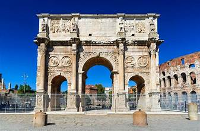
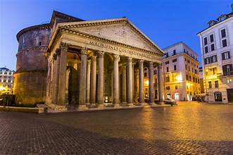
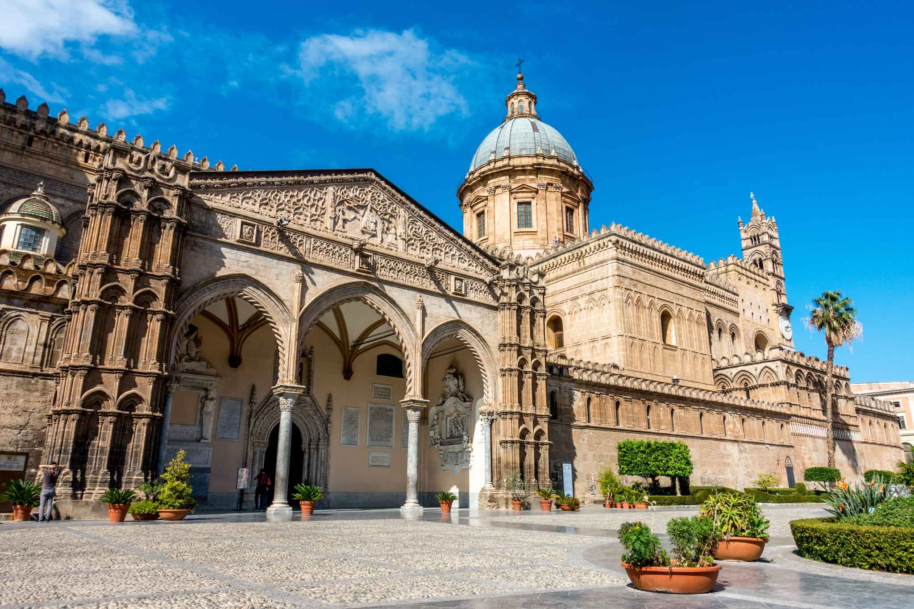
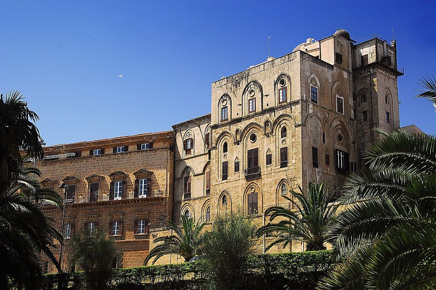
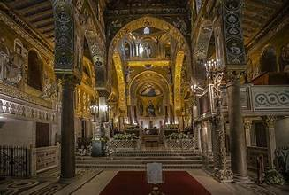
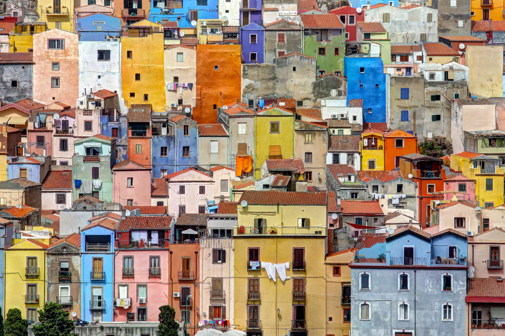
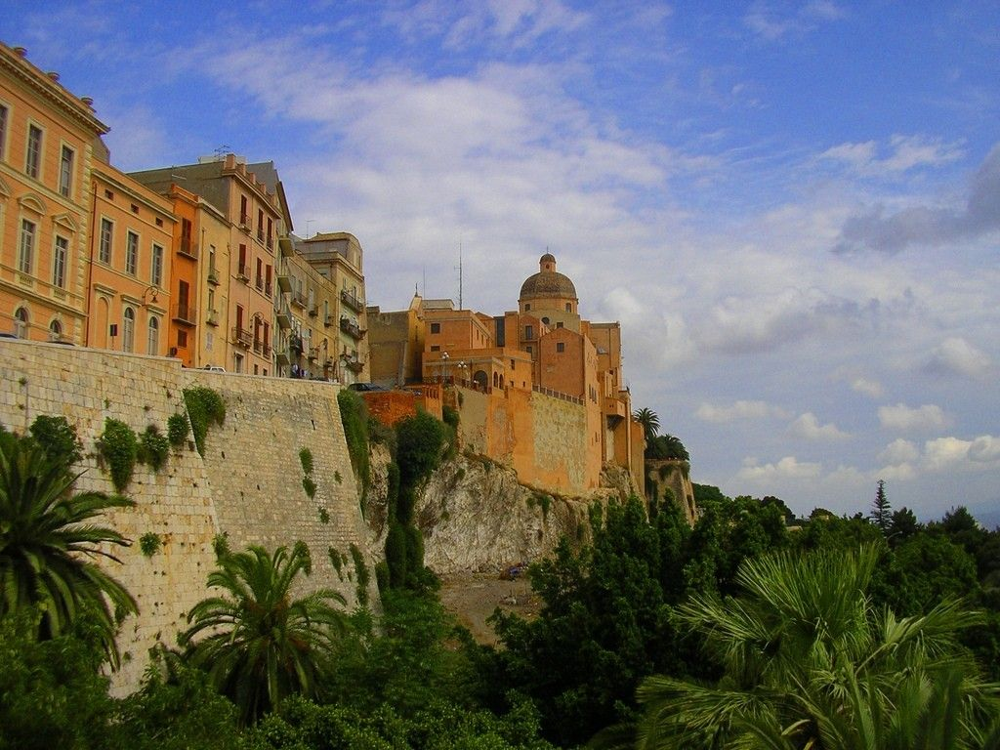
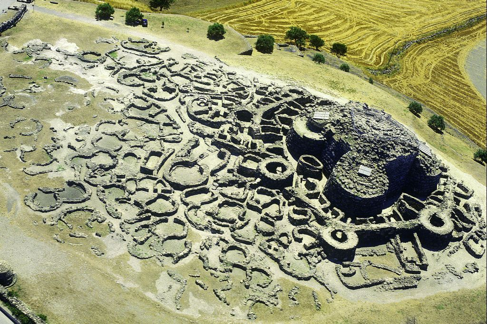

TOP TOURIST SPOT IN ITALY
ROME ITALY
The Colosseum and the Arch of Constantine
As the Eiffel Tower is to Paris, the silhouette of the Flavian Amphitheatre is to Rome. The largest structure left to us by Roman antiquity, the Colosseum still provides the model for sports arenas - present-day football stadium design is clearly based on this oval Roman plan.
The building was begun by Vespasian in AD 72, and after his son Titus enlarged it by adding the fourth story, it was inaugurated in the year AD 80 with a series of splendid games. The Colosseum was large enough for theatrical performances, festivals, circuses, or games, which the Imperial Court and high officials watched from the lowest level, aristocratic Roman families on the second, the populace on the third and fourth.
Beside the Colosseum stands the Arch of Constantine, a triumphal arch erected by the Senate to honor the emperor as "liberator of the city and bringer of peace" after his victory in the battle of the Milvian Bridge in 312.

Vatican City
The Vatican is the smallest independent state in the world, with an area of less than half a square kilometer, most of it enclosed by the Vatican walls.
Inside are the Vatican palace and gardens, St. Peter's Basilica, and St. Peter's Square, an area ruled by the Pope, supreme head of the Roman Catholic Church. This compact space offers a lot of things to see, between its museums and the great basilica itself.
Inside St. Peter's Basilica is Michelangelo's masterpiece, Pieta, along with statuary and altars by Bernini and others.
The unquestioned highlight of the Vatican museums is the Sistine Chapel, whose magnificent frescoed ceiling is Michelangelo's most famous work.
In the Vatican Palace are the Raphael Rooms; the Borgia Apartments; the Vatican Library, and a number of museums that include the Picture Gallery, Museum of Secular Art, Etruscan Museum, and others. The collections you can see in these cover everything from papal coaches to 20th-century art reflecting religious themes.
Ticket lines for the Vatican's attractions are incredibly long, and you can spend several hours waiting in line. To save time, purchase a Skip the Line: Vatican Museums with St. Peter's, Sistine Chapel, and Small-Group Upgrade tour in advance. This three-hour tour allows you to bypass the long lines and walk straight into the museums with a knowledgeable guide. Headsets are provided, and you can choose from several different departure times or upgrade to an evening or small-group tour.

The Pantheon
The Pantheon - the best-preserved monument of Roman antiquity - is remarkably intact for its 2000 years. This is despite the fact that Pope Gregory III removed the gilded bronze roof tiles, and Pope Urban VIII ordered its bronze roof stripped and melted down to cast the canopy over the altar in St. Peter's and cannons for Castel Sant'Angelo.
The Pantheon was rebuilt after damage by fire in AD 80, and the resulting brickwork shows the extraordinarily high technical mastery of Roman builders. Its 43-meter dome, the supreme achievement of Roman interior architecture, hangs suspended without visible supports – these are well hidden inside the walls – and its nine-meter central opening is the building's only light source.
The harmonious effect of the interior is a result of its proportions: the height is the same as the diameter.
Although the first Christian emperors forbade using this pagan temple for worship, in 609 Pope Boniface IV dedicated it to the Virgin and all the Christian martyrs, and since then, it has become the burial place of Italian kings (Victor Emmanuel II is in the second niche on the right) and other famous Italians, including the painter, Raphael.

PALERMO ITALY
Cattedrale
The east exterior of Palermo's cathedral retains the original Norman character: three apses, cross-over round arches, and curved parapets. The south side, overlooking the square, is memorable for its 1453 Gothic-Catalan portico through which you'll enter. One of its columns, with an early Arabic inscription, comes from a mosque.
The triangular pediment contains a carving, God the Father on His Throne, and above the doorway, a 13th-century mosaic of the Virgin Mary on a gold background. The bell-tower dates to the 12th century but was rebuilt in 1840. The Loggia dell'Incoronata to the left of the west front, where kings appeared following their coronation, was also built in the 12th century but altered in the 15th.
You enter into the right aisle, where the first two chapels contain the monumental tombs of the Norman-Hohenstaufen dynasty. The four sarcophagi are in purple Egyptian porphyry, previously permitted only for the tombs of Roman and Byzantine emperors.
At the left front is that of Frederick II, supported by four lions; the tympanum shows the Norman crown, and on the top are decorative panels of the Virgin Mary and Christ between symbols of the Apostles. You'll see copies of this in tombs of Sicilian nobility elsewhere on the island.
In a figural sarcophagus in the wall on the right is the tomb of Frederick's first wife, Constance of Aragon, who died in 1222. The sarcophagus was opened in 1781, and inside, grave objects were found that you can see in the cathedral treasury. The most outstanding of these is the almost priceless crown of Constance of Aragon, richly decorated with strings of pearls and precious stones. It is probably the same one with which Frederick II was crowned emperor by Pope Honorius III in 1220-he would have placed it in Constance's grave.

Palazzo dei Normanni
In the 9th century, the Arabs built a palace for their Emir, and under the Norman rulers and the Hohenstaufen Frederick II, the palace became even more splendid. It suffered a long period of neglect, until the Spanish viceroy renovated and extended it to use as his residence. Since 1947, the regional parliament of Sicily has sat here.
One prominent Norman structure remains on the northeast front, the high Torre Pisana with its neat square stone blocks and blind arcades of ogival arches. It is the last remaining of the original four towers; inside is a typical square hall, above which an observatory was built in 1791.
You enter into the Cortile Maqueda, a square courtyard that was constructed in 1600 surrounded by three stories of arcades with rounded arches. Steps lead to the core of the palace, the Cappella Palatina on the first floor and the Appartamenti Reali (Royal Apartments) on the second. Here, you'll see the Sala di Ercole (Hall of Hercules), where the Sicilian Parliament now sits, just as the Barons' Parliament did in the Middle Ages.
The Sala di Ruggiero is completely covered with mosaics showing hunting and animal scenes. To the west of the palace stands the Porta Nuova, the magnificent gateway built in 1535.

Cappella Palatina
This court church of the Normans was consecrated in 1140; the mosaics in the chancel were probably completed in 1143, and those in the nave somewhat later. Around 1350, the mosaic on the west wall portraying Christ between Peter and Paul was added.
In spite of all the changes through the centuries, the interior has not lost the overall harmony between the Latin basilica, the Byzantine dome and mosaic decoration, and the Arabic stalactite ceiling. There is a mystical semi-darkness in this triple-aisled basilica, pierced only by a shimmer of gold. The wooden ceiling of the central aisle is decorated in the Arabic style, with stalactites painted with small scenes.
Notice at the western end, to the left of the entrance, an example of the Normans' reverence for royalty: the raised marble platform for the royal throne. The pulpit stands on carved pillars decorated with inlay work, and the lecterns are carved with the symbols of the Apostles Mark and John. A tall paschal candelabra is decorated in reliefs of flowers and figures, the center one showing Christ with King Roger II, the chapel's founder, kneeling before him.
But it is the mosaics covering all the internal walls for which the chapel is most famous. Those in the nave reflect Old Testament themes in the central aisle and New Testament themes in the side aisles, beginning with the story of the Creation on the top of the south wall of the central aisle and continuing clockwise to the top of the north wall, where you'll see scenes from the Fall of Man to the building of Noah's Ark.
The stories continue along the bottom of the south wall. In the side-aisles are scenes of Paul and Peter. While the mosaics in the nave tell a continuing story, those in the dome of the sanctuary center on Christ. These mosaics are 18th-century-the difference in style and quality between these and those of the 12th century is striking.

SARDINIA ITALY
Discover the Colorful Town of Bosa
If you wish you could experience the beauty of Cinque Terre or the Amalfi Coast without the hoards of tourists, then Bosa is the place for you. This seaside town features colorful houses and rolling hills as the more well-known destinations on the mainland. Still, because of Bosa's relative remoteness, you won't see many non-Italians there. The pastel-colored houses against the water look like real-life postcards, and you can climb to the top of the Castle of Serravalle for a panoramic view of the whole town. It's about a two-hour drive north from Cagliari, but it brings you closer to all other gems in the island's northern part.

Explore Cagliari’s Castello Neighborhood
You'll likely start your trip in Cagliari, Sardinia's capital and most populous city with over 5,000 years of history. The walls of its imposing hilltop citadel are narrow, winding medieval streets; a comprehensive archaeological museum; defensive towers (some of which can be climbed for knockout views of the coast); and the ornate 13th-century Saint Mariàs Cathedral. Roman and Carthaginian ruins are a short walk outside the old city walls. Add in a few pit stops in the area's cozy bars, restaurants, and shops, and you've got an excellent way to spend an afternoon and evening.

Plumb the Mysteries of Nuragic Culture at Barumini
From around 1500 BCE to the Punic Wars in the 3rd and 2nd centuries BCE, the Nuragic peoples were the dominant culture on the island.1 They left behind more than 7,000 nuraghi, beehive-shaped stone fortresses surrounded by smaller hive-shaped buildings and, often, a defensive wall. The best example of an extensive Nuragic village is Su Nuraxi at Barumini, a UNESCO World Heritage site about one hour north of Cagliari.

BACK